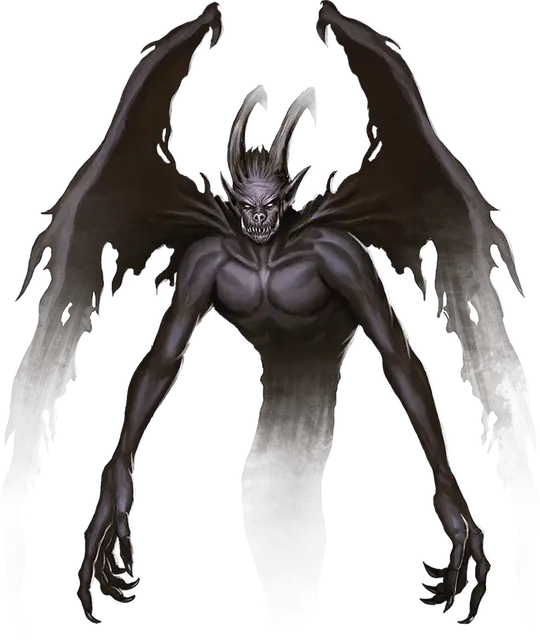

Теневой демон
Shadow Demon
Среднее Исчадие (Демон), хаотично-злое

Класс Доспеха 13
Хиты 66 (12к8 + 12)
Скорость 30 футов, летая 30 футов
| мод | спас | ||
|---|---|---|---|
| СИЛ | 1 | −5 | −5 |
| ЛОВ | 17 | +3 | +5 |
| ТЕЛ | 12 | +1 | +1 |
| мод | спас | ||
|---|---|---|---|
| ИНТ | 14 | +2 | +2 |
| МДР | 13 | +1 | +1 |
| ХАР | 14 | +2 | +4 |
Навыки Скрытность +7
Уязвимость к урону излучение
Сопротивление урону звук, кислота, некротическая энергия, огонь; дробящий, колющий, рубящий от немагических атак
Иммунитет к урону холод, электричество, яд
Иммунитет к состояниям сбивание с ног, паралич, отравление, опутанность, окаменение, истощение, захват
Чувства тёмное зрение 120 футов, пассивное Восприятие 11
Языки Бездны, Телепатия 120 фт.
Опасность 4 (1100 опыта)
Бонус мастерства +2
Особенности
Бестелесное перемещение. Демон может перемещаться сквозь других существ и предметы, как если бы они были труднопроходимой местностью. Он получает урон силовым полем 5 (1к10), если оканчивает ход внутри предмета.
Чувствительность к свету. Находясь на ярком свету, демон совершает с помехой броски атаки, а также проверки Мудрости (Восприятие), полагающиеся на зрение.
Скрытность в тени. Находясь в области тусклого света или тьмы, демон может совершать действие Засада бонусным действием.
Действия
Когти. Рукопашная атака оружием: +5 к попаданию, досягаемость 5 футов, одно существо. Попадание: Урон психической энергией 10 (2к6 + 3) или, если демон совершал бросок атаки с преимуществом, урон психической энергией 17 (4к6 + 3).
Описание
Если тело демона уничтожено, но исчадие не смогло заново воплотиться в Бездне, его сущность может принять частично бесплотную форму. Теневые демоны существуют вне привычной демонической иерархии, так как их появление зачастую идёт от магии смертных, а не посредством превращения или роста.
Теневые демоны исчезают во тьме и двигаются, не издавая ни звука. Бесплотными когтями они вырывают и пожирают страхи жертв, пробуют на вкус воспоминания и упиваются сомненьями. Яркий свет — их враг, он являет их настоящую форму, рассеивая размытую тьму и освещая крылатого гуманоида, нижняя часть которого рассеивается дымом, и чьи страшные когти рвут разум жертвы.
Теневая природа. Теневому демону не нужен воздух, еда, питьё и сон.
См. дополнительно статью: "Бестиарий: Демоны"